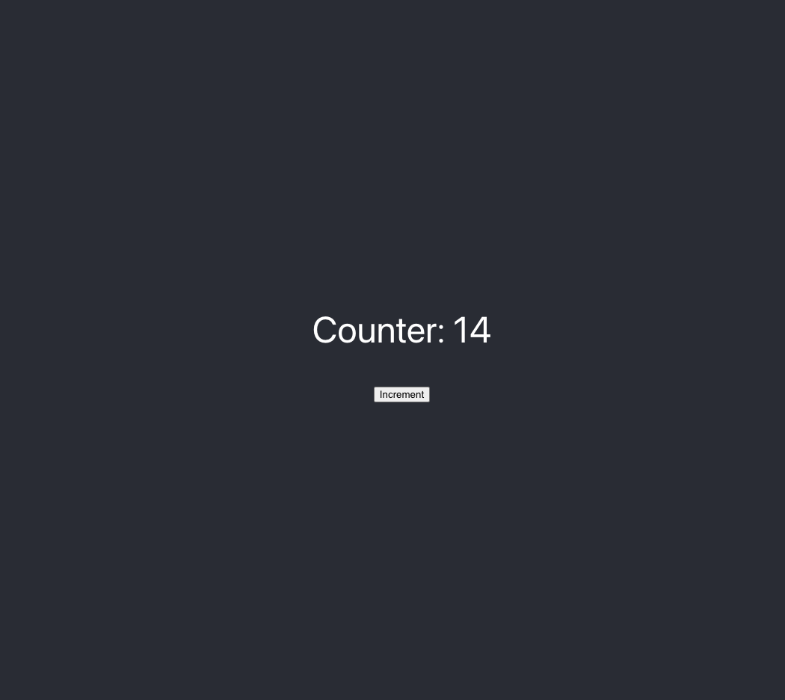

Building a Frontend to Interact With Your Contract
To build out our frontend application, we'll do the following:
- Initialize a React project.
- Install the
fuelsSDK dependencies. - Write our frontend code.
- Run our project.
Initialize a React project
To split our project's contract from frontend code, let's create a new folder frontend where we'll initialize our frontend project.
In the terminal, go back up one directory and initialize a react project using Create React App.
$ cd ..
$ npx create-react-app frontend --template typescript
Success! Created frontend at Fuel/fuel-project/frontend
You should now have your outer folder, fuel-project, with two folders inside: counter-contract and frontend

Install the fuels SDK dependency
The fuels umbrella package includes all the main tools you need for your frontend; Wallet, Contracts, Providers, and more.
Also, it contains the routines for ABI TypeScript generation.
ABI stands for Application Binary Interface. ABI's inform the application the interface to interact with the VM, in other words, they provide info to the APP such as what methods a contract has, what params, types it expects, etc...
Installing
Move into the frontend folder, then run:
$ cd frontend
$ npm install fuels@0.35.0 --save
added 114 packages, and audited 115 packages in 29s
Generating contract types
To make it easier to interact with our contract we use fuels typegen command to interpret the output ABI JSON from our contract, and generate Typescript definitions based on it. This JSON was created when we executed the forc build command to compile our Sway Contract into binary.
If you see the folder fuel-project/counter-contract/out you will be able to see the ABI JSON there. If you want to learn more, read the ABI spec.
Inside the fuel-project/frontend directory run:
$ npx fuels typegen -i ../counter-contract/out/debug/*-abi.json -o ./src/contracts
Generating files..
- src/contracts/CounterContractAbi.d.ts
- src/contracts/factories/CounterContractAbi__factory.ts
- src/contracts/index.ts
Done.⚡
Now you should be able to find a new folder fuel-project/frontend/src/contracts. This folder was auto-generated by our fuels typegen command, and these files abstract the work we would need to do to create a contract instance, and generate a complete TypeScript interface to the Contract, making easy to develop.
Create A Wallet (Again)
For interacting with the fuel network we have to submit signed transactions with enough funds to cover network fees. The Fuel TS SDK doesn't currently support Wallet integrations, requiring us to have a non-safe wallet inside the WebApp using a privateKey.
Note: This should be done only for development purpose. Never expose a web app with a private key inside. The Fuel Wallet is in active development, follow the progress here.
In the root of the frontend project create a file named createWallet.js and add the following code:
File: ./frontend/createWallet.js
const { Wallet } = require("fuels");
const wallet = Wallet.generate();
console.log("address", wallet.address.toString());
console.log("private key", wallet.privateKey);
In a terminal, run the following command:
$ node createWallet.js
address fuel160ek8t7fzz89wzl595yz0rjrgj3xezjp6pujxzt2chn70jrdylus5apcuq
private key 0x719fb4da652f2bd4ad25ce04f4c2e491926605b40e5475a80551be68d57e0fcb
Note: You should use the generated address and private key.
Save the private key, you will need this later to set it as a string value for a variable WALLET_SECRET in your App.tsx file. More on that below.
First, take the address of your wallet and use it to get some coins from the testnet faucet.
Now you're ready to build and ship ⛽
Note: The team is working to simplify the process of creating a wallet, and eliminate the need to create a wallet twice. Keep an eye out for these updates.
Modify the App
Inside the frontend/src folder let's add code that interacts with our contract.
Read the comments to help you understand the App parts.
Change the file fuel-project/frontend/src/App.tsx to:
File: ./frontend/src/App.tsx
import { useEffect, useState } from "react";
import { Wallet } from "fuels";
import "./App.css";
// Import the contract factory -- you can find the name in index.ts.
// You can also do command + space and the compiler will suggest the correct name.
import { CounterContractAbi__factory } from "./contracts";
// The address of the contract deployed the Fuel testnet
const CONTRACT_ID =
"0x2c38161e42ce14abdaa7950c04b13aa340eb67cf196c94b971d5f0175417f4f4";
//the private key from createWallet.js
const WALLET_SECRET =
"0x07960a5124cd6e52b595aed727d640aed2e32cc587a34c09f1b48615378df752";
// Create a Wallet from given secretKey in this case
// The one we configured at the chainConfig.json
const wallet = Wallet.fromPrivateKey(
WALLET_SECRET,
"https://beta-3.fuel.network/graphql"
);
// Connects out Contract instance to the deployed contract
// address using the given wallet.
const contract = CounterContractAbi__factory.connect(CONTRACT_ID, wallet);
function App() {
const [counter, setCounter] = useState(0);
const [loading, setLoading] = useState(false);
useEffect(() => {
async function main() {
// Executes the counter function to query the current contract state
// the `.get()` is read-only, because of this it don't expand coins.
const { value } = await contract.functions.count().get();
setCounter(Number(value));
}
main();
}, []);
async function increment() {
// a loading state
setLoading(true);
// Creates a transactions to call the increment function
// because it creates a TX and updates the contract state this requires the wallet to have enough coins to cover the costs and also to sign the Transaction
try {
await contract.functions.increment().txParams({ gasPrice: 1 }).call();
const { value } = await contract.functions.count().get();
setCounter(Number(value));
} finally {
setLoading(false);
}
}
return (
<div className="App">
<header className="App-header">
<p>Counter: {counter}</p>
<button disabled={loading} onClick={increment}>
{loading ? "Incrementing..." : "Increment"}
</button>
</header>
</div>
);
}
export default App;
Run your project
Now it's time to have fun, run the project in your browser.
Inside the fuel-project/frontend directory run:
$ npm start
Compiled successfully!
You can now view frontend in the browser.
Local: http://localhost:3001
On Your Network: http://192.168.4.48:3001
Note that the development build is not optimized.
To create a production build, use npm run build.

You just built a fullstack dapp on Fuel! ⛽
Here is the repo for this project. If you run into any problems, a good first step is to compare your code to this repo and resolve any differences.
Tweet us @fuel_network letting us know you just built a dapp on Fuel, you might get invited to a private group of builders, be invited to the next Fuel dinner, get alpha on the project, or something 👀.
Updating The Contract
If you make changes to your contract, here are the steps you should take to get your frontend and contract back in sync:
-
In your contract directory, run
forc build -
In your contract directory, redeploy the contract by running this command and following the same steps as above to sign the transaction with your wallet:
forc deploy --node-url beta-3.fuel.network/graphql --gas-price 1 --random-salt -
In your frontend directory, re-run this command:
npx fuels typegen -i ../counter-contract/out/debug/*-abi.json -o ./src/contracts -
In your
fuel-project/frontenddirectory, update the contract ID in yourApp.tsxfile
Need Help?
Get help from the team by posting your question in the Fuel Forum.